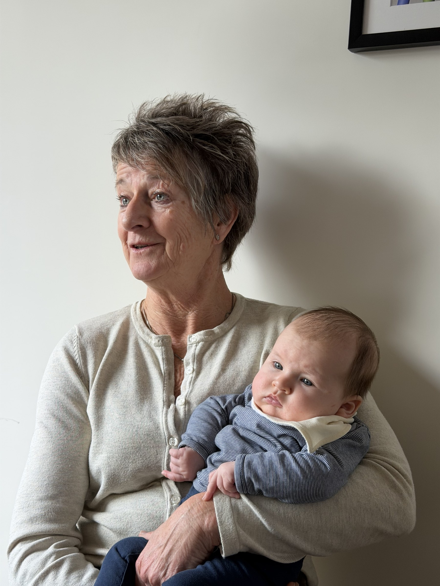
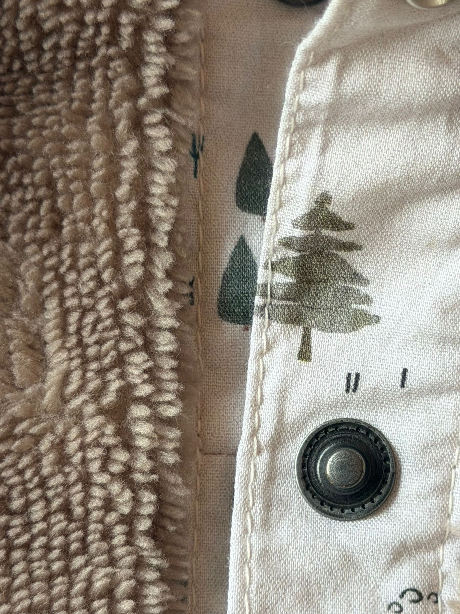

Dit is Jannie.
Atelier Aiguille is het kleine label van Jannie. Vanuit haar atelier in Dongen maakt ze kleding en tassen — bijna alles met de hand, vaak van materialen die ze al jaren bewaart.

Plezier in het maken.
Voor Jannie zit de kern in het proces. Het puzzelen met een stuk stof, het combineren van kleur, het netjes afwerken van een naad. Wanneer er aan het einde iets tastbaars staat — een blouse, een jurk, een tas — is dat de beloning.
Het gaat niet om mode in de snelle of trendgevoelige zin van het woord. Het gaat om aandacht, karakter en het plezier van de maker zelf.
Kleur tegen de grijze massa.
Kleding van de zolderkamer.
Zolder stof · oude knopen · bewaarde lapjes
Hergebruik.
Mooie dingen hoeven niet weggegooid te worden. Een oude spijkerbroek heeft genoeg stof voor een tas. Een doos vol losse knopen is een schatkamer. Verschillende knopen aan één blouse zijn geen fout — het is een zichtbaar bewijs van waar het vandaan komt.
Duurzaamheid is hier geen statement. Het is gewoon de manier waarop Jannie altijd al heeft gewerkt.
Kleur tegen de grijze massa.
In veel kleding voor oudere vrouwen mist Jannie lef. Beige, grijs, voorzichtig. Atelier Aiguille kiest bewust voor warmte en kleur — aubergine, koningsblauw, diep groen, warm rood — zonder schreeuwerig te worden.
Eenvoudige basismodellen, opvallende details. Stoer genoeg om te dragen, zacht genoeg om je in thuis te voelen.

Een houding
Plezier in het maken.
Dat is waar het bij Jannie om draait.